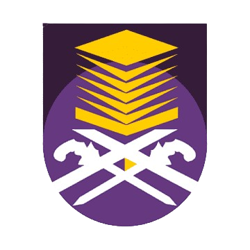
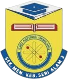
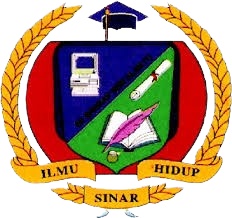

<!DOCTYPE html>
<html lang="en">
<head>
<title>EDUCATION</title>

<html>
  <link rel="stylesheet" href="styles.css">
</head>
<body>

</body>
</html>

<meta charset="UTF-8">
<meta name="viewport" content="width=device-width, initial-scale=1">
<body>
<body style="background-color:LavenderBlush;">

<style>
body {
  font-family: Arial;
  margin: 0;
}

.footer {
  padding: 5px;
  text-align: center;
  background-color: PaleVioletRed;
  color: Linen;
  font-size: 13px;
  font-family: Arial;
}

.section {
  padding: 20px;
  margin: 10px;
  background-color: white;
  border-radius: 8px;
  box-shadow: 0 0 10px rgba(0, 0, 0, 0.1);
        }

.content {padding:10px;}
  font-family: Arial;
</style>
</head>
<body>

<div class="header">
  <h1 style="font-family:Lucida Handwriting;">˖⟡˚࣪౨ৎ⋆ My Education ⋆౨ৎ˚⟡˖</h1>
</div>

<div class="section">

<p>

  <b><u>Diploma in Information Management</u></b></p>
  <p>Universiti Teknologi Mara | <i>2022 - Present</i></p>
  <p>GPA : 3.46</p>

<hr style="height:2px;border-width:0;color:lightgrey;background-color:LightGrey">

<p>

  <b><u>Sijil Pelajaran Malaysia (SPM)</u></b></p>
  <p>Sekolah Menengah Kebangsaan Seri Alam 2 | <i>2017 - 2021</i></p>
  <p>RESULT : 4A 1A- 2B+ 1C</p>

<hr style="height:2px;border-width:0;color:lightgrey;background-color:LightGrey">

 <p>

 <b><u>Ujian Pencapaian Sekolah Rendah (UPSR)</u></b></p>
  <p>Sekolah Kebangsaan Bandar Seri Alam 1 | <i>2011 - 2016</i></p>
  <p>RESULT : 2A 3B 1C</p>

</div>

<div class="footer">
  <p><center><p>© 2024 Nabilla Edrina. All rights reserved.</p></center>
</div>


</body>
</html>
